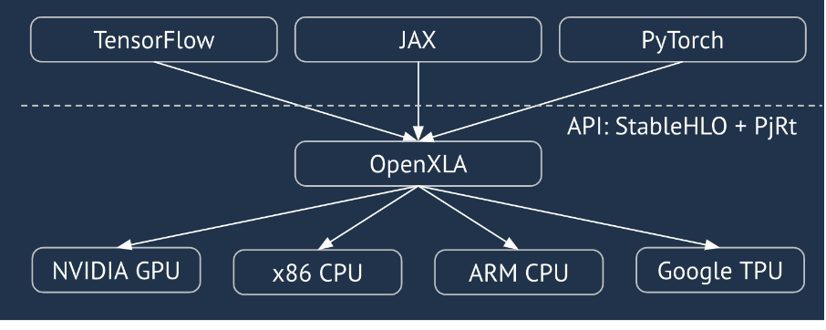
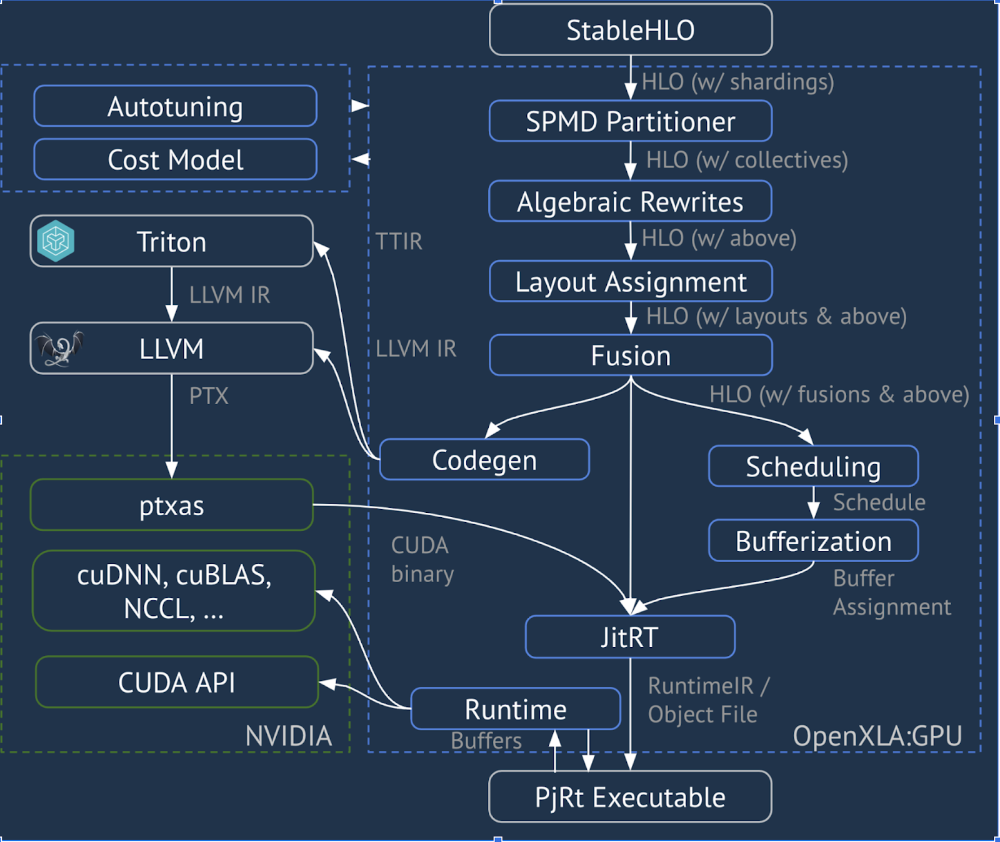
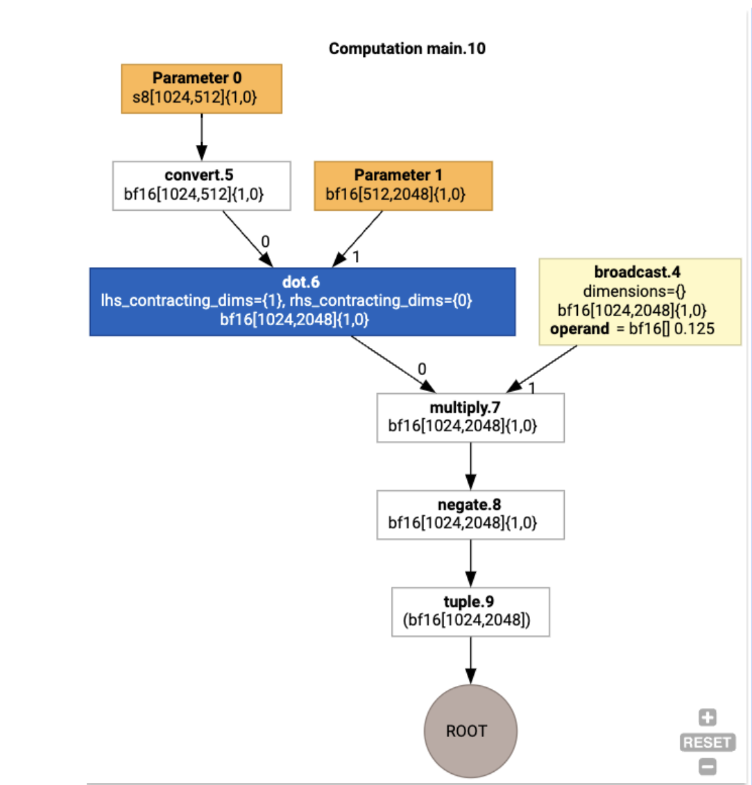
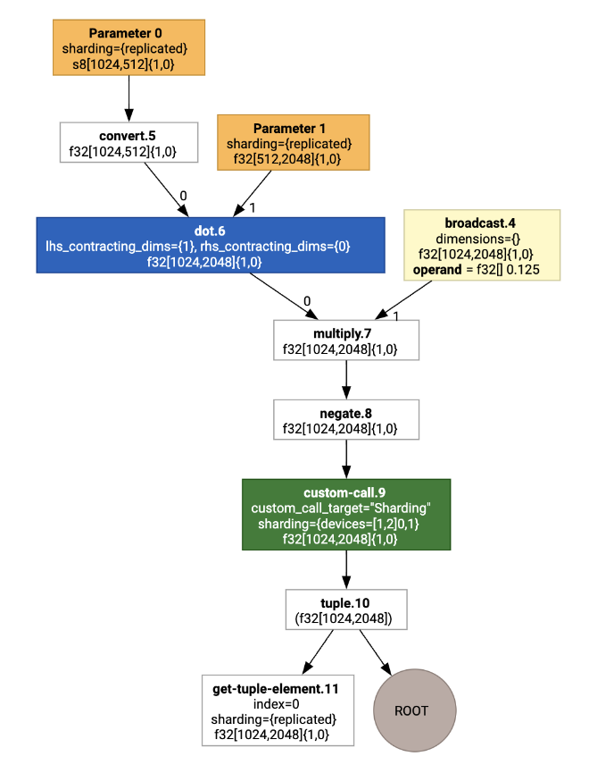
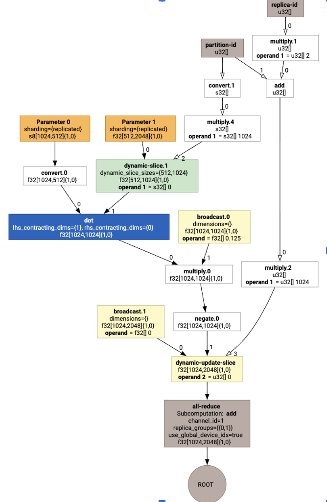
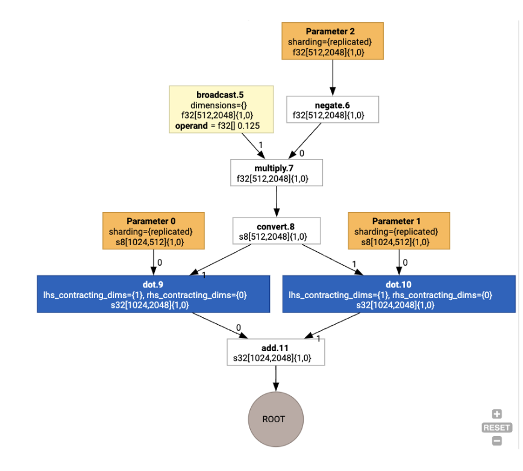
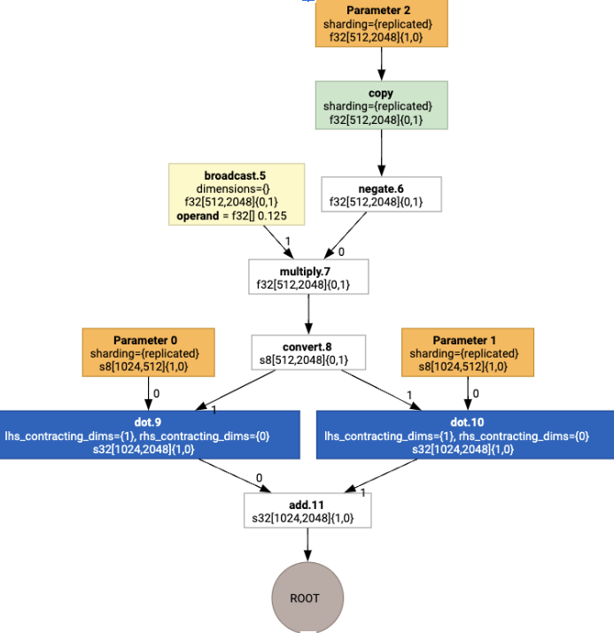
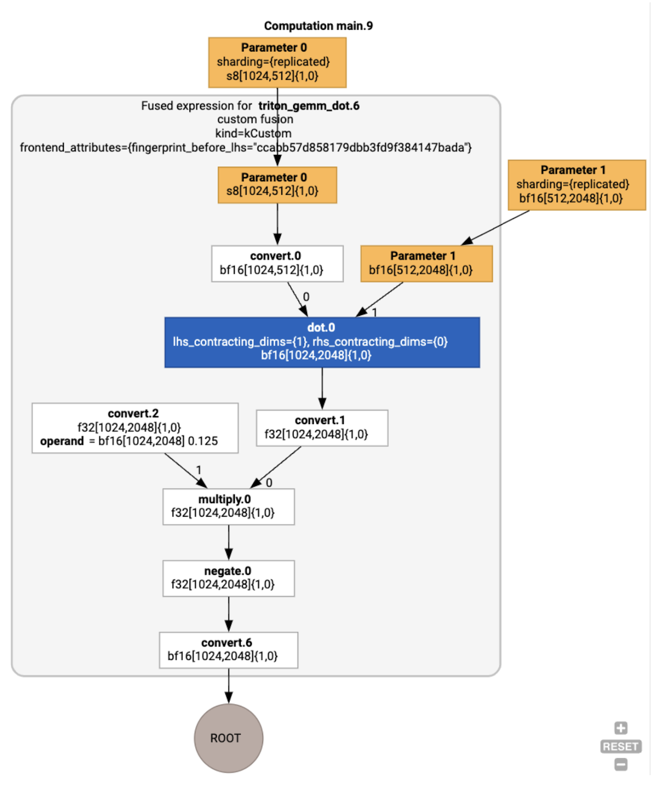
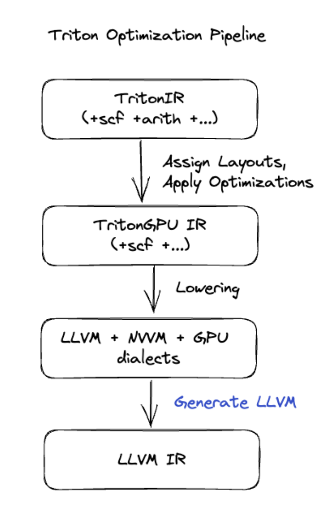

XLA:GPU Architecture Overview#
Introduction#
XLA is a hardware- and framework- domain-specific compiler for linear algebra, offering best-in-class performance. JAX, TF, Pytorch and others use XLA by converting the user input to StableHLO (“high-level operation”: a set of ~100 statically shaped instructions like addition, subtraction, matmul, etc) operation set, from which XLA produces optimized code for a variety of backends:

During the execution, the frameworks invoke the PJRT runtime API, which lets the frameworks perform the operation “populate the specified buffers using a given StableHLO program on a specific device”.
XLA:GPU Pipeline#
XLA:GPU uses a combination of “native” (PTX, via LLVM) emitters and TritonIR emitters to generate high-performance GPU kernels (blue color indicates 3P components):

Running Example: JAX#
To illustrate the pipeline, let’s start with a running example in JAX, which computes a matmul combined with multiplication by a constant and negation:
def f(a, b):
return -((a @ b) * 0.125)
We can inspect the HLO generated by the function:
M = 1024
K = 512
N = 2048
key = jax.random.PRNGKey(1701)
a = jax.random.randint(key, (M, K), dtype=jax.numpy.int8, minval=0, maxval=255)
b = jax.random.normal(key, (K, N), dtype=jax.dtypes.bfloat16)
print(jax.xla_computation(f)(a, b).as_hlo_text())
which generates:
HloModule xla_computation_f, entry_computation_layout={(s8[1024,512]{1,0}, bf16[512,2048]{1,0})->(bf16[1024,2048]{1,0})}
ENTRY main.10 {
Arg_0.1 = s8[1024,512]{1,0} parameter(0)
convert.5 = bf16[1024,512]{1,0} convert(Arg_0.1)
Arg_1.2 = bf16[512,2048]{1,0} parameter(1)
dot.6 = bf16[1024,2048]{1,0} dot(convert.5, Arg_1.2), lhs_contracting_dims={1}, rhs_contracting_dims={0}
constant.3 = bf16[] constant(0.125)
broadcast.4 = bf16[1024,2048]{1,0} broadcast(constant.3), dimensions={}
multiply.7 = bf16[1024,2048]{1,0} multiply(dot.6, broadcast.4)
ROOT negate.8 = bf16[1024,2048]{1,0} negate(multiply.7)
}
We can visualize the input HLO computation as well, using
jax.xla_computation(f)(a, b).as_hlo_dot_graph():

Optimizations on HLO: Key Components#
A number of notable optimization passes happen on HLO, as HLO->HLO rewrites.
SPMD Partitioner#
The XLA SPMD partitioner, as described in
GSPMD: General and Scalable Parallelization for MLComputation Graphs,
consumes HLO with sharding annotations (produced e.g. by jax.pjit), and
produces a sharded HLO which can then run on a number of hosts and devices.
Apart from partitioning, the SPMD attempts to optimize HLO for an optimal
execution schedule,
overlapping computation
and communication between the nodes.
Example#
Consider starting from a simple JAX program sharded across two devices:
# Defines a mesh with two axes called ‘x’ and ‘y’,
# sharded across two devices: first and second CPU.
with jax.sharding.Mesh(
[['cpu:0', 'cpu:1']], ('x', 'y')):
@pjit
def f(a, b):
out = -((a @ b) * 0.125)
# Shard output matrix access across ‘x’
# and ‘y’ respectively. Generates ‘Sharding’
# custom call.
out = with_sharding_constraint(
out, jax.lax.PartitionSpec('x', 'y'))
return out
# Random inputs to call our function.
a = jax.random.randint(key, (1024, 512), jnp.int8)
b = jax.random.normal(key, (512, 2048), jnp.float32)
print(f.lower(a, b).compiler_ir())
Visualizing it, the sharding annotations are presented as custom calls:

To check how the SPMD partitioner expands the custom call, we can look at HLO after optimizations:
print(f.lower(np.ones((8, 8)).compile().as_text())
Which generates HLO with a collective:

Layout Assignment#
HLO decouples logical shape and physical layout (how tensors are laid out in
memory). For example, a matrix f32[32, 64] can be represented either in
row-major or column-major order, represented as {1,0} or {0,1} respectively.
In general, layout is represented as a part of shape, showing a permutation over
the number of dimensions indicating physical layout in memory.
For each operation present in the HLO, the Layout Assignment pass chooses an
optimal layout (e.g. NHWC for a convolution on Ampere). For example, an
int8xint8->int32 matmul operation prefers {0,1} layout for the RHS of the
computation. Similarly, “transposes” inserted by the user are ignored, and
encoded as a layout change.
The layouts are then propagated through the graph, and conflicts between layouts
or at graph endpoints are materialized as copy operations, which perform the
physical transposition. For example, starting from the graph

Running the layout assignment we see the following layouts and copy operation
inserted:

Fusion#
Fusion is XLA’s single most important optimization, which groups multiple operations (e.g. addition into exponentiation into matmul) to a single kernel. Since many GPU workloads tend to be memory-bound, fusion dramatically speeds up the execution by avoiding the writing of intermediate tensors to HBM and then reading them back, and instead passes them around in either registers or shared memory.
Fused HLO instructions are blocked together in a single fusion computation, which establishes the following invariants:
No intermediate storage inside the fusion is materialized in HBM (it has to be all passed through either registers or shared memory).
A fusion is always compiled to exactly one GPU kernel
HLO Optimizations on Running Example#
We can inspect the post-optimization HLO using jax.jit(f).lower(a, b).compile().as_text(), and verify that a single fusion got generated:
HloModule jit_f, is_scheduled=true, entry_computation_layout={(s8[3,2]{1,0}, bf16[2,3]{1,0})->bf16[3,3]{1,0}}, allow_spmd_sharding_propagation_to_output={true}
%triton_gemm_dot.6_computation (parameter_0: s8[3,2], parameter_1: bf16[2,3]) -> bf16[3,3] {
%parameter_0 = s8[3,2]{1,0} parameter(0)
%convert.0 = bf16[3,2]{1,0} convert(s8[3,2]{1,0} %parameter_0)
%parameter_1 = bf16[2,3]{1,0} parameter(1)
%dot.0 = bf16[3,3]{1,0} dot(bf16[3,2]{1,0} %convert.0, bf16[2,3]{1,0} %parameter_1), lhs_contracting_dims={1}, rhs_contracting_dims={0}
%convert.1 = f32[3,3]{1,0} convert(bf16[3,3]{1,0} %dot.0)
%constant_0 = bf16[] constant(0.125)
%broadcast.0 = bf16[3,3]{1,0} broadcast(bf16[] %constant_0), dimensions={}
%convert.2 = f32[3,3]{1,0} convert(bf16[3,3]{1,0} %broadcast.0)
%multiply.0 = f32[3,3]{1,0} multiply(f32[3,3]{1,0} %convert.1, f32[3,3]{1,0} %convert.2)
%negate.0 = f32[3,3]{1,0} negate(f32[3,3]{1,0} %multiply.0)
ROOT %convert.6 = bf16[3,3]{1,0} convert(f32[3,3]{1,0} %negate.0)
}
ENTRY %main.9 (Arg_0.1: s8[3,2], Arg_1.2: bf16[2,3]) -> bf16[3,3] {
%Arg_1.2 = bf16[2,3]{1,0} parameter(1), sharding={replicated}
%Arg_0.1 = s8[3,2]{1,0} parameter(0), sharding={replicated}
ROOT %triton_gemm_dot.6 = bf16[3,3]{1,0} fusion(s8[3,2]{1,0} %Arg_0.1, bf16[2,3]{1,0} %Arg_1.2), kind=kCustom, calls=%triton_gemm_dot.6_computation, backend_config={"kind":"__triton_gemm","triton_gemm_config":{"block_m":"64","block_n":"64","block_k":"64","split_k":"1","num_stages":"2","num_warps":"4"}}
}
Note that the fusion backend_config tells us that Triton will be used as a
code generation strategy, and it specifies the chosen tiling.
We can also visualize the resulting module:

Buffer Assignment and Scheduling#
A buffer assignment pass takes into account the shape information, and aims to produce an optimal buffer allocation for the program, minimizing the amount of intermediate memory consumed. Unlike TF or PyTorch immediate-mode (non-compiled) execution, where the memory allocator does not know the graph in advance, the XLA scheduler can “look into the future” and produce an optimal computation schedule.
Compiler Backend: Codegen and Library Selection#
For every HLO instruction in the computation, XLA chooses whether to run it using a library linked into a runtime, or to codegen it to PTX.
Library Selection#
For many common operations, XLA:GPU uses fast-performance libraries from NVIDIA, such as cuBLAS, cuDNN, and NCCL. The libraries have an advantage of verified fast performance, but often preclude complex fusion opportunities.
Direct code generation#
The XLA:GPU backend generates high-performance LLVM IR directly for a number of operations (reductions, transposes, etc).
Triton code generation#
For more advanced fusions which include matrix multiplication or softmax, XLA:GPU uses Triton as a code-generation layer. HLO Fusions are converted to TritonIR (an MLIR dialect which serves as an input to Triton), selects tiling parameters and invokes Triton for PTX generation:

We have observed the resulting code to perform very well on Ampere, at near-roofline performance with properly tuned tile sizes.
Runtime#
XLA Runtime converts the resulting sequence of CUDA kernel calls and library invocations into a RuntimeIR (an MLIR dialect in XLA), on which CUDA graph extraction is performed. CUDA graph is still work in progress, only some nodes are currently supported. Once CUDA graph boundaries are extracted, RuntimeIR is compiled via LLVM to a CPU executable, which can then be stored or transferred for Ahead-Of-Time compilation.